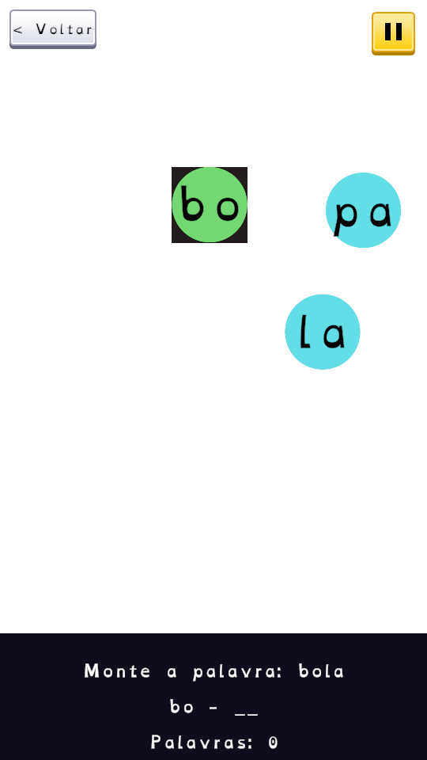
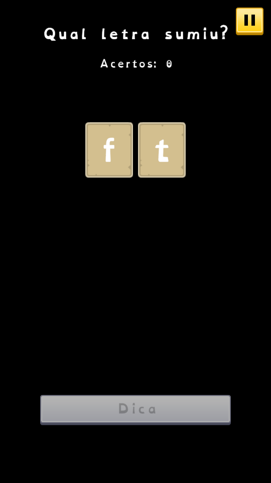

ABiblioteca
A porta se fechou e a Biblioteca é enorme! Para achar a saída, você ajuda pessoas que se perderam, e cada uma entrega um pedaço do mapa. No caminho, você treina letras, sílabas, atenção e ritmo, sem nota e sem susto.
Um jogo para praticar, não para ser avaliado
A dislexia é uma dificuldade de aprendizagem da leitura e da escrita. Em português, o que costuma pesar é a leitura lenta e custosa, mesmo depois de a criança conhecer as letras. Praticar é preciso, mas muita prática vira cobrança. A Biblioteca Infinita oferece prática curta, calma e sem medo de errar.
Crianças do 1º ao 5º ano
De 6 a 10 anos: de quem está começando a ler a quem já lê mas ainda tropeça. O jogo descobre onde cada criança está e ajusta o caminho.
Quatro jogos e uma história
Jogos curtos de letras, sílabas, atenção visual e ritmo, dentro de uma Biblioteca com dez andares. Um relatório separado mostra ao adulto o que aconteceu.
Não diagnostica nem trata
O jogo não substitui avaliação nem acompanhamento com profissionais. Os números ficam só no relatório do adulto e descrevem o que a criança fez jogando.
Quem está perdido são as pessoas, não você
Você entra numa Biblioteca imensa, cheia de corredores. A porta se fecha. Para voltar, é preciso mapear os caminhos entre as partes da Biblioteca. Em cada parte há alguém que se perdeu antes. Quando você ajuda essa pessoa, ganha dela um pedaço do mapa. Com o mapa inteiro, a saída aparece!
Cada andar é um universo dentro da Biblioteca: um corredor onde as letras caem como chuva de luz, uma sala redonda de bolhas de sílabas, uma estante que acende por um instante. O universo é só cenário, personagem e frase: o desafio é o mesmo, e o cenário nunca esconde o que você precisa ver.
O ciclo de um andar
Chegada. Uma cena curta, de no máximo três falas, apresenta a pessoa perdida.
O desafio. O jogo do andar, com dificuldade que se ajusta a você.
Conclusão. A pessoa agradece e entrega um pedaço do mapa, igual para todas as crianças.
Salão de reencontro. A cada grupo de jogos, as pessoas ajudadas se reencontram. Ali o jogo só observa, e nada bloqueia o caminho.
Regras que protegem a brincadeira
A história só anda para a frente. Errar, pedir ajuda ou demorar nunca deixa ninguém em perigo, triste ou assustado.
Sem vilão, sem vidas, sem tempo na tela, sem ranking e sem nota. A recompensa celebra "você ajudou", não "você passou".
Pouco texto, em fonte legível, com opção de fonte para dislexia. A dislexia não é tema nem superpoder da história.
Estado: a abertura, os andares 1 e 2 e o reencontro do Salão Surpresa já têm cena no jogo. O resto do roteiro é rascunho a revisar com especialista e com crianças.
Quem você vai encontrar
São pessoas comuns que se perderam na Biblioteca. Nomes e falas são provisórios, e os desenhos aqui são ilustrações deste site: o jogo ainda usa círculos coloridos no lugar dos retratos.
Rascunhos para os próximos andares
Dez andares para subir
Cada jogo tem o seu andar, e a cada grupo de jogos vem um salão misto que só observa. Toque num andar para espiar o que acontece nele. Os andares 11 a 14 existem no projeto e ficam escondidos até depois do MVP.
Quatro jogos curtos
Cada jogo treina uma habilidade ligada à leitura. A criança só vê o nome e como jogar. Termos técnicos e números ficam no relatório do adulto. As imagens são capturas reais do protótipo, ainda com arte provisória.
Acha a Letra!
Letras caem como chuva. Você toca na letra pedida. Os níveis começam com letras bem diferentes e chegam às que se confundem (b, d, p, q; n, u; m, w).
Treina: distinguir letras parecidas. O jogo descobre qual troca é a difícil para você e passa a repetir mais essa.

Esprema a Sílaba!
Bolhas com sílabas flutuam. Você toca nelas na ordem para formar a palavra (bo, la: bola).
Treina: separar a palavra em sílabas, uma base para ler e escrever.

Quem Sumiu?
Algumas letras aparecem e depois uma some. Você diz qual sumiu.
Hoje é um jogo de memória. A ideia é trocá-lo por um jogo de atenção visual a vários elementos ao mesmo tempo (o "Relâmpago da Estante"), que tem mais apoio na literatura.

Segue o Ritmo!
Você ouve e vê batidas e repete o padrão tocando.
Em aberto: não é certo que fique no MVP. A evidência de que ritmo ajuda na leitura é recente e modesta, e vem de jogos de formato diferente.

O mapa dos andares
Entre os grupos de jogos há salões que alternam os jogos anteriores em nível fixo, 3 rodadas de cada, sem dica e sem reforço. Você não vê nota. Servem para comparar o desempenho ao longo do tempo e não bloqueiam nada.
Quando um andar é concluído, o selo vira "completo" e uma estrela acende.

Se você errar
O jogo repete o mesmo item com a resposta certa em destaque. É uma ajuda, não um castigo.
Se você empacar
Aparece um botão de dica. Respostas dadas com ajuda não contam como domínio, mas também não punem.
Do primeiro toque ao relatório
Perfil. No primeiro acesso, o adulto cria o perfil (nome ou apelido, idade, ano escolar) e confirma que o responsável concorda com o registro dos resultados.
Pega a Estrela! Um jogo curto mede a velocidade que a criança acha confortável. Ela ajusta o quanto os jogos se movem.
Sala de Entrada. Três jogos de 10 itens (letras, sílabas, atenção). Cada um sobe quando a criança acerta e desce quando erra, até achar onde ela está. Sem dica e sem reforço. O resultado é o perfil de habilidades.
Abertura e mapa. A cena de abertura apresenta a Biblioteca. Depois a criança vê o mapa de andares e os pedaços do mapa que já recebeu.
Os andares. Cada andar tem cena de chegada, o jogo e cena de conclusão. O andar conta como concluído quando a criança acerta pelo menos 6 das últimas 8 respostas sem ajuda e já passou por todos os níveis de letras do andar.
Revisão. A cada 3 desafios concluídos, ou depois de cerca de 14 dias, a Sala de Revisão repete a escada em versão curta e atualiza o perfil. O jogo usa o perfil para decidir qual habilidade merece mais prática: duas de cada três vão para as mais fracas e uma para a mais forte, e nenhuma é abandonada.
Relatório. Atrás de uma pergunta de multiplicação, o adulto vê o relatório e pode copiá-lo.
Esses números (10 itens, 6 de 8, 3 desafios, 14 dias) são hipóteses de trabalho, escolhidas a partir da literatura e de simulações. Ainda serão ajustados com profissionais e crianças.
Duas réguas: o que você vê e a pressa
Se letras mais parecidas e queda mais rápida subissem juntas, o jogo não saberia por que a criança errou: confundiu as letras ou foi a pressa? Por isso o Acha a Letra tem duas réguas separadas.
Só olha acerto e erro, nunca o tempo. 2 acertos seguidos sobem um nível; 2 erros seguidos descem um. Um acerto ou erro isolado mantém.
Olha o tempo em relação à média pessoal da criança. Acerto rápido sobe; acerto devagar mantém; erro desce. Um erro muito rápido (provável chute) desce só meio degrau.
Experimente!
Faça de conta que você está jogando. Toque nas respostas e veja as letras caírem mais rápido ou mais devagar.
Exemplo didático do mecanismo atual, com a escala de 0 a 4 do conteúdo. Os valores são provisórios.
Por que medir no começo
Crianças mais velhas têm dificuldades diferentes das mais novas, e a série não diz quais. Uma criança de 4º ano pode já distinguir bem as letras e ainda errar ao ligar o som à imagem. Por isso o jogo mede cada habilidade na Sala de Entrada e usa o resultado para dar mais prática onde a criança precisa, em vez de seguir uma ordem fixa para todos.
O que ainda está em decisão
A regra de 2 acertos e 2 erros deixa a criança errando metade das vezes no nível de fronteira, o que é pouco acolhedor. Simulações mostram que "3 acertos sobem, 1 erro desce" mira cerca de 79% de acerto. A Sala de Entrada já usa essa regra. A decisão para os jogos e o critério de "dominou" (por exemplo, 8 de 10 com 3 alternativas) dependem de profissionais e do piloto.
O relatório
Psicólogos, psicopedagogos e educadores veem o que a criança fez: perfil do aluno, velocidade, perfil de habilidades, cada jogo com nível alcançado e tempo de decisão, trocas de letras por tipo, medições dos salões e avisos sobre como ler os números. O relatório descreve o jogo e não diagnostica.
Exemplo com dados inventados:
2B. PERFIL DE HABILIDADES (Sala de Entrada) Letras e trocas de letras (Acha a Letra): nível 3 de 4. 8 acertos em 10 itens (80%), decisão média 2,1 s, 2 inversões da escada. Confiança 100%. Sílabas (Esprema a Sílaba): pelo menos o nível 4 de 6 (não errou o bastante para achar o limite). Prioridade do jogo para a próxima prática: Atenção visual > Sílabas > Letras e trocas de letras. Revisão: a cada 3 desafios concluídos ou 14 dias. Cerca de 10 itens por habilidade é pouco: trate como ponto de partida, a confirmar nas revisões.
Dados fictícios, só para mostrar o formato.
O que a pesquisa sustenta e o que não
O projeto parte de uma revisão de 33 artigos sobre jogos para dislexia e de pesquisas posteriores, priorizando trabalhos de 2020 a 2026. Várias decisões usam evidência indireta, e cada uma está marcada como hipótese no projeto.
| Decisão | O que a literatura diz |
|---|---|
| Treinar consciência fonológica e sílabas | É o resultado de maior efeito na meta-análise de Hall e colegas (2023, 53 estudos, do 1º ao 5º ano). |
| Quanto tempo jogar | Não há tempo mínimo universal. Mais horas rendem pouco por hora, e num ensaio com jogo adaptativo no 1º ano a exposição dentro do jogo não previu o resultado. |
| Dar menos prática ao que já está no teto | Há apoio indireto (letra-som chega ao teto cedo; Germano e colegas, 2017, no Brasil). Nenhum ensaio comparou essa escolha com a sequência completa. |
| Regra por série escolar | A literatura recente não traz receita por série. O que muda do 1º ao 5º ano é a fase de leitura, o que sustenta medir a criança em vez de usar a série. |
| Quantos acertos para dominar | Nenhum estudo define isso para jogos de leitura com dislexia. Usamos cálculos próprios (a chance de passar no chute depende do número de alternativas) e modelos de domínio. |
| Ritmo e atenção visual | Há ensaios recentes com ganhos modestos, em formatos diferentes do nosso. Por isso o ritmo continua em avaliação e a atenção visual substituirá a memória. |
Limite importante: nenhum estudo mostra que este jogo melhora a leitura. Para saber, será preciso um piloto com crianças, com teste externo antes e depois, de preferência com grupo de comparação.
O que já existe e o que falta
| Peça | Estado | Observação |
|---|---|---|
| Quatro jogos, dez andares e três salões mistos | Pronto | Testados no Unity em 05/11/2026 por 433 testes automáticos e por execução dos fluxos, com perfil fictício. |
| Motor adaptativo (duas réguas no Acha a Letra) | Pronto | Valores ainda provisórios. |
| Perfil do aluno e relatório do adulto | Pronto | Relatório com rolagem e cópia. |
| Calibração, Sala de Entrada, revisão e escalonador | Pronto | Testado em Play pela equipe; valores a calibrar. |
| História: abertura, andares 1 e 2 e pedaços do mapa | Parcial | Faltam os andares 3 a 10, voz, retratos e botão de pular e repetir. |
| Atenção visual no lugar do Quem Sumiu | A fazer | Depende de decisão da equipe. |
| Gravações de fala (sons de letras, sílabas, palavras) | A fazer | Inventário de 17 palavras, 18 sílabas e 10 letras-alvo já feito; falta gravar com apoio de profissional. |
| Arte final e áudio | A fazer | Hoje há arte provisória (Kenney, licença livre). |
| Teste em aparelho Android real | A fazer | Toque real, teclado, botão Voltar, vibração e latência. |
| Revisão por especialista e piloto com crianças | A fazer | Conteúdo, níveis, roteiro e números ainda não foram revistos. |
| Exportação de dados e aplicativo do pedagogo | A fazer | Fora do escopo do MVP. |
Cuidados com os dados da criança
O progresso fica salvo no aparelho. Antes de qualquer piloto, é preciso decidir como proteger dados pessoais de crianças (hoje o arquivo local não é criptografado), exigir consentimento do responsável e permitir apagar o cadastro.